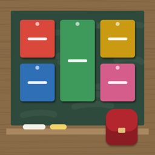

あしたの持ち物がそろう時間割
時間割から、あしたの持ち物が一覧に。iPhone と iPad のアプリです。
小学生・中学生の時間割のアプリです。教科ごとに持ち物（教科書・ノート・リコーダー・体操服など）を1回入れておくと、次の登校日の時間割から、その日の持ち物の一覧が自動でできます。前の晩に、ランドセルに入れながらチェックできます。
- 2つの教科で同じ物は1つにまとめ、どの教科の物かを色の札で見せます
- 毎日の物（筆箱・連絡帳など）と、曜日の物（月曜は上ばき など）も入ります
- その日だけの変更：時間の入れ替え・その日だけの物（空き箱など）・休みを入れると、持ち物も入れ替わります
- 日曜・祝日（振替休日も）は自動で休み。夏休みなどの休みの期間も入れられます
- きょうだいの分を何人でも。1〜8時間目・土曜も。同じ教科が続くと2時間続きの1つの札になります
- 前の晩に「あしたの持ち物をそろえましょう」と知らせます（入にしたときだけ許可をたずねます）
- 登録・課金はありません。入れた時間割と持ち物は、この端末の中だけに保存します。画面のいちばん下に小さな広告が出ます（画面いっぱいの広告・動画の広告は出さず、広告の音は消しています）